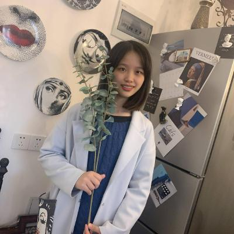

Wenting Chen 陈文婷Ph.D. Candidate
Department of Electrical Engineering, [Pinned Message] I will graduate in 2025 and am looking for postdoc position. |
 |
About Me
I am a third-year Ph.D candidate in the Department of Electrical Engineering, City University of Hong Kong, supervised by Prof. Yixuan YUAN, Prof. W.S Tommy Chow, and Prof. L.H. Leanne Chan. Before that, I received the B. Eng and M. Eng degree from College of Computer Science and Software Engineering in Shenzhen University of China in 2017 and 2020, supervised by Prof. Linlin Shen.
My research interests lie in multi-modal vision-language model/large language model, generative AI, computer vision and their applications on medical AI, with a focus on multi-modal learning/pre-training, report generation, medical image synthesis, endoscopy super-resolution, retinal image segmentation, multi-modality diagnosis, image editing, etc.
Welcome to contact me about research collaboration, please don't hesitate to drop me emails if you are interested. Also welcome to contact me about any interesting topics and questions on AI techniques/engineering, products and investment!
To be done